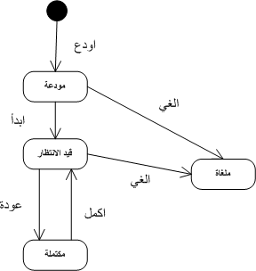

دورة حياة خدمة
مثل الطلبات, تمر الخدمات بعدة حالات وذلك حسب الحركات المنفذة عليها. يمكن اجراء الخدمات التالية على الخدمات :
- ايداع – تتم هذه الحركة عند حفظ الخدمة لاول مرة. ايداع الخدمة يحول الخدمة الى حالة "مودعة".
- ابدأ – للبدء في معالجة خدمة اختر" ابدأ " من ادوات تفاصيل الطلب. عند بدأ الخدمة يتم تحويلها الى حالة " قيد العمل ". يمكن بدء الخدمة اذا كان الطلب معينا وتم اختيار إحدى الخدمات للمعالجة.
- الغاء – يمكن الغاء الخدمة اذا لم تعد ضرورية او غير مناسبة, يمكن الغاء الخدمة من شريط ادوات تفاصيل الطلب. الغاء الخدمة يحول حالة الخدمة الى "ملغاة". جميع الخدمات يجب ان تكون في حالة "مكتملة " او "ملغاة" قبل الموافقة على الطلب. حركة الالغاء تكون فعالة اذا كان الطلب معينا وتم اختيار احدى الخدمات
- أكمل – لانهاء معالجة خدمة . استخدم اداة "انهاء" من شاشة تفاصيل الطلب . حركة استكمال الخدمة تقوم بفحص قواعد الاعمال وتحويل الخدمة الى حالة "مكتملة" اذا نجحت جميع جميع قواعد الاعمال. حركة الانهاء تكون فعالة اذا كان الطلب معينا وتم اختيار احدى الخدمات
- تراجع – خلال عملية مراجعة الخدمة , اذا راى المستخدم ان الخدمة تحتاج الى معالجة اضافية , يستطيع المستخدم الرجوع بالخدمة الى حالتها السابقة " قيد المعالجة" وذلك باستخدام اداة " تراجع" من شاشة تفاصيل الطلب. حركة التراجع تكون فعالة اذا كان الطلب معينا والخدمة التي اختيارها في حالة "مكتملة "
الشكل التالي يوضح المراحل التي يمر بها الخدمة وتاثير كل حركة على هذه الحالات.

انظر ايضا